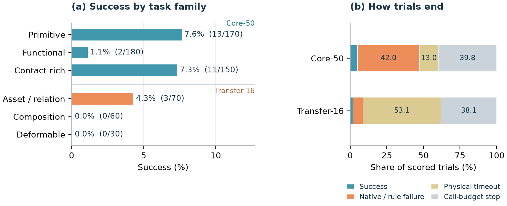

Establishing contact
Grasping a tool does not guarantee functional contact. Policies may activate buttons, shutters, or tools before reaching the intended state.

* Equal contribution · † Project lead · ‡ Corresponding author

The benchmark
Dexterous manipulation demands reliable contact, coordinated fingers and hands, and the ability to maintain a goal after reaching it.
HandsOn brings these challenges into one simulation data platform. Its Core-50 suite provides demonstrations and execution tests for functional tool use, numerical and spatial grounding, articulation, and bimanual manipulation. Transfer-16 tests unfamiliar assets and relations, compositions of learned skills, and deformable objects, without target-task demonstrations.
Across approximately 40,000 Core-50 episodes, the strongest of eight multi-task checkpoints reaches 29.1% task-macro success. Pushing, articulation, and pick-and-place are substantially more reliable than tool use and precision fitting. The gap persists after controlling for demonstration count and duration.
Without HandsOn demonstrations or finetuning, GPT-6 with move_eef reaches 5.2% on Core-50 and 1.9% on Transfer-16 over 660 trials. Its task-aware action notes motivate richer interfaces for grounding high-level plans in dexterous execution.
Two-minute introduction
The platform, task suites, and key findings, with on-screen English text.
One platform, two complementary suites
Explore all 66 tasks, from tool use and handovers to skill composition and deformable objects.
Learn and execute. Demonstrations and closed-loop tests span primitive, functional, and contact-rich interactions.
Test what transfers. Six compositional, seven asset/relation, and three deformable tasks have no target-task demonstrations.
66 tasks
Data platform
A physically grounded setup connects data collection, visual diversity, and policy evaluation.

18,000 trajectories pair a front camera and two wrist cameras with measured states, commanded actions, language, and source metadata. The dataset contains 15,178 training and 2,822 validation trajectories.
Re-rendering changes materials, lighting, room context, and bounded camera poses while preserving the recorded state/action sequence. Appearance remains consistent within each trajectory.
Prompt variation preserves the object, numerical target, direction, order, and constraints. Training and held-out paraphrases distinguish wording changes from changes to the executable goal.


Examples of appearance variation in the re-rendered demonstrations.
Evaluation
Ten evaluated methods: nine trained policies and a prompted GPT-6 controller. Results follow the manuscript; experimental conditions differ.
Trained checkpoints use 100 planned episodes per task; GPT-6 uses ten. The primary score is task-macro success within the declared time budget.
| Model | Success | Primitive | Functional | Contact-rich | Tasks ≥ 50% |
|---|
Primitive / functional / contact-rich groups contain 17 / 18 / 15 tasks. HY-Embodied has 99 valid episodes on Place Wine Glass. DP is a separate single-task reference: 9.7% overall; 38 of 50 evaluations use an earlier goal sampler, so it is not ranked with the multi-task checkpoints. GPT-6 uses RGB observations, measured state, static task guidance, and move_eef, with different interaction budgets. Highlighting identifies the best trained checkpoint in each column. See the paper for confidence intervals and matched-task analysis.
Trained checkpoints use 50 planned episodes per task. Ordered progress measures the longest completed prefix of task stages. GPT-6 success is reported separately below.
| Model | Success | Ordered progress | Asset / relation | Composition | Deformable |
|---|
The last three columns report ordered progress. Gen02 is excluded from progress because no graded hinge progress is logged. Stack Boxes has 37 valid resets and Spray Shoe 43, shared across checkpoints; at most two invalid episodes occur elsewhere. DP is not evaluated on Transfer-16. See the paper for the full success/progress breakdown.
move_eefTen trials per task, without HandsOn demonstrations or finetuning. Success rates:
| Suite / family | Successes / trials | Success |
|---|---|---|
| All Transfer-16 | 3 / 160 | 1.9% |
| Asset / relation | 3 / 70 | 4.3% |
| Composition | 0 / 60 | 0.0% |
| Deformable | 0 / 30 | 0.0% |
OpenWAM leads the eight evaluated multi-task checkpoints.
Group-mean success for pushing, articulation, and pick-and-place.
The largest gaps remain in precise, sustained physical interaction.
Prompted VLM controller
GPT-6 with move_eef: 29 successes in 660 trials (4.4%), with ten trials on every task.
The model chooses palm poses and individual finger targets from three RGB views, measured robot state, the task instruction, and execution feedback. Ten episodes per task reflect API-cost and wall-clock evaluation-time budgets while covering all 66 tasks.
Saved action notes suggest task-aware prerequisites and attempts to monitor execution, including checking that a towel follows a test lift before folding. These qualitative observations motivate studying GPT-6 as a high-level planner. The minimal harness also requires it to ground plans in high-dimensional control, without grasp primitives, explicit object-pose estimates, or tactile feedback. Matched evaluations across richer agent harnesses are a future direction.

Beyond a single score
Grasping a tool does not guarantee functional contact. Policies may activate buttons, shutters, or tools before reaching the intended state.
Bimanual tasks require both hands to reach compatible states together. Compositions add another challenge: finishing one stage before beginning the next.
Momentary alignment is not enough. Overshoot, unstable release, and loss of a completed state can turn partial progress into failure.
An offline object-name probe finds weak conditioning in HY-Embodied and LingBot-VLA checkpoints from the evaluated runs. Reliable manipulation requires following the named target as well as executing the physical interaction.
Build on HandsOn
Task design, evaluation protocols, results, and detailed analysis.
02 / CODE66 task environments, unified policy interfaces, and paper model adapters.
03 / DATALeRobot-format trajectories with synchronized views and fixed splits.
Policy checkpoints are not redistributed in the code release. See the model integration guide for supported adapters and required assets.
@article{luo2026handson,
title = {HandsOn: A Large-Scale Simulation Benchmark
for Generalizable Dexterous Manipulation},
author = {Luo, Tianwei and He, Yiming and Wu, Hongjin
and Pan, Ting and Ren, Debin and Guo, Haorui
and Yang, Junlin and Zuo, Yuxin and Kou, Zhehao
and Yang, Kaisen and Lai, Zhuoqun and Ding, Yi
and Yu, Jiale and Zhang, Yuchen and Qiu, Zijie
and Li, Haozhan and Ding, Ning},
year = {2026}
}